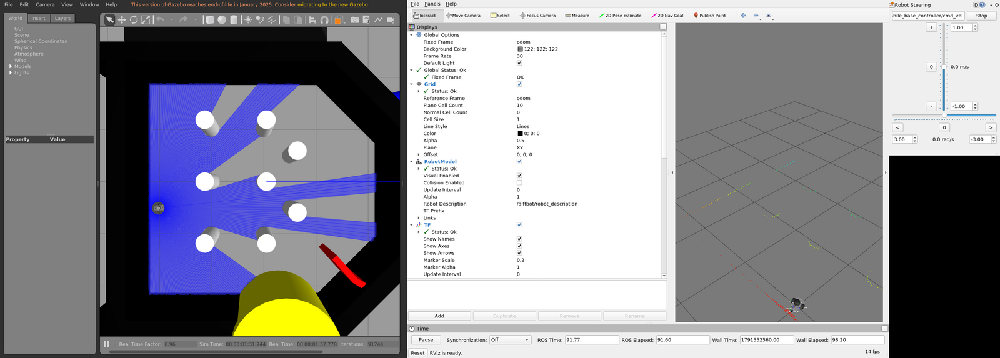

Development Environment
The diffbot repository has a dev container for ROS 1 Noetic: a Docker image with Ubuntu 20.04, ROS Noetic, Gazebo 11, RViz and every dependency of the DiffBot packages. Every developer, and CI, gets the same environment, on Linux and on Windows with WSL 2.
It's the recommended setup for the development PC. The robot's single board computer is still set up natively, see Packages Setup.
How the pieces fit together
A few terms first:
- Host: the computer that runs Docker Engine and the container. That's your Linux PC, or on Windows the Ubuntu that runs in WSL 2 (Windows Subsystem for Linux). "On the host" means in a terminal of that Linux, not inside the container.
- Container: a separate Ubuntu 20.04 with ROS Noetic that runs on the host (what is a container). A dev container is a container set up for development, described by a
devcontainer.jsonfile (containers.dev). Your clone of the diffbot repository is shared with it, so you edit files on the host and build and run them in the container. - X server and X clients: Linux GUI programs use the X Window System (X11). The X server is the program that draws windows on your screen, so it runs where the screen is. The programs that want windows, like RViz, Gazebo and rqt, are X clients: each one connects to the X server and tells it what to draw. One X server serves many clients, and the clients may run somewhere else, for example in the container. The naming feels backwards at first: the server is on your desk, and the apps are its clients.
- Which X server: on a Linux desktop, the desktop's own (Xwayland on Wayland desktops). On Windows, WSLg (Windows Subsystem for Linux GUI, part of WSL 2 on Windows 11 and on Windows 10 build 19044 or later, see the prerequisites) is the X server for Linux programs and shows their windows on the Windows desktop.
Simulation, no robot needed: everything runs in the container. Gazebo simulates the robot, RViz shows what it sees. They are X clients, and their windows appear on your screen through the host's X server (see GUI apps):
With the real robot: the robot runs ROS natively on its Raspberry Pi (see Packages Setup), and together with the container on your PC it forms one ROS network, with the ROS master on the PC. RViz, mapping and navigation run on the PC. How the PC and the robot connect is described in ROS Network Setup.
Requirements
Docker on the host
The dev container runs on Docker Engine, the part of Docker that builds images and runs containers. There are two ways to get it: install Docker Engine directly in your Linux (on Windows, in the Ubuntu in WSL 2), or install Docker Desktop, an app that brings its own Docker Engine. Use one of them, not both. Docker Engine is the tested setup.
Install Docker Engine as described in Docker's guide Install Docker Engine on Ubuntu, with Docker's apt repository. This works the same in the Ubuntu in WSL 2.
Ubuntu's own packages work too, and this setup was tested with them (Docker 29 on Ubuntu 24.04). Docker calls them unofficial, and they can be older than Docker's releases:
1 | |
Either way, then follow Docker's post-installation steps, so you can use Docker without sudo:
1 | |
Log out and in again so the new docker group applies. On WSL 2, run wsl --shutdown in Windows PowerShell and open Ubuntu again. Docker runs as a systemd service, which WSL turns on by default for current Ubuntu versions (systemd in WSL).
Docker Desktop is an app for Windows, macOS and Linux that runs Docker Engine in its own virtual machine. On Windows, that's a separate WSL distribution called docker-desktop, and its WSL integration makes the docker command available in your Ubuntu. Uninstall Docker Engine from your Ubuntu first, because the two conflict.
Two things are different from Docker Engine:
- The container's "host" is Docker Desktop's virtual machine, not your Ubuntu. Its host network, which this setup uses, is an opt-in feature from version 4.34 (Settings → Resources → Network → Enable host networking) and only carries TCP and UDP (Docker docs).
- Docker Desktop is free for personal use, education, non-commercial open source projects and small businesses. Larger companies need a paid subscription (Docker Desktop license).
Docker Desktop isn't tested with this setup, and especially not with the robot.
A way to start the container
VS Code with the Dev Containers extension is the easiest. The Dev Container CLI works from a terminal (npm install -g @devcontainers/cli, which needs Node.js). Plain Docker works too. All three are shown under Usage.
For windows like RViz and Gazebo
Install xauth on the host:
1 | |
With the usual cookie-based setup, the X server only accepts clients that present the display's cookie. In X11, a cookie is a secret: a random 128-bit value that your desktop creates when you log in. Clients without it, for example other users' programs, can't draw on your screen or read it. Any client that has the cookie can connect, which is how the container gets access (X security). It has nothing to do with web cookies. xauth is the standard tool for these cookies, and the setup uses it to hand yours to the container (see GUI apps).
Nothing to install: WSLg shows the windows on the Windows desktop. It's part of WSL 2 on Windows 11 and on Windows 10 build 19044 or later (see the prerequisites).
Real robot from Windows (optional)
Only needed if your PC runs Windows and you want to connect to the real robot. By default, WSL 2 sits behind its own network translation (NAT), so the robot can't connect to your PC, and ROS 1 needs connections in both directions. WSL's mirrored networking removes that barrier. Why, how to set it up and how to test it: Work machine on Windows (WSL 2).
You don't need it on Linux, where the container uses the PC's own network address. You also don't need it for simulation, because then all ROS nodes run in the container on your PC, and no other device has to connect to it.
Not tested with the robot yet
Mirrored networking is Microsoft's fix for exactly this problem, but nobody has tested this setup with DiffBot or Remo yet.
Usage
The steps depend on your PC. Choose your platform:
-
Clone the repository in a terminal:
1 2
git clone https://github.com/ros-mobile-robots/diffbot.git cd diffbot -
Start the container, in the
diffbotfolder, with one of these:Run
code .to open the folder in VS Code, or open it from VS Code's menu. Then choose Reopen in Container in the notification, or run Dev Containers: Reopen in Container from the command palette (Ctrl+Shift+P). The first start builds the image and the workspace, which takes a few minutes.1 2
devcontainer up --workspace-folder . --config .devcontainer/noetic/devcontainer.json devcontainer exec --workspace-folder . --config .devcontainer/noetic/devcontainer.json bashThe first command builds the image and the workspace, which takes a few minutes. The second opens a shell in the container.
The image's user has UID 1000, which is the usual UID of the first user on Linux. With another UID, use VS Code or the CLI, which adapt it (see Creating the container).
1 2 3 4 5 6
docker build -f .devcontainer/noetic/Dockerfile -t diffbot:noetic . bash .devcontainer/noetic/host-x11.sh docker run -it --rm --net=host -v /tmp/.X11-unix:/tmp/.X11-unix -e DISPLAY \ -e XAUTHORITY=/home/ros/catkin_ws/src/diffbot/.devcontainer/noetic/.x11/xauth \ -v "$PWD":/home/ros/catkin_ws/src/diffbot diffbot:noetic \ bash -c "bash src/diffbot/.devcontainer/noetic/setup.sh && bash"
- Open the Ubuntu terminal: start Ubuntu from the Start menu, or run
wslin PowerShell. Run all the following commands there, not in PowerShell. -
Clone the repository into your Ubuntu home folder, not into a Windows folder under
/mnt/c. Files in the WSL file system are much faster for Linux tools (WSL file systems):1 2 3
cd ~ git clone https://github.com/ros-mobile-robots/diffbot.git cd diffbot -
Start the container, in the
diffbotfolder, with one of these:VS Code runs as a Windows program, while Docker Engine runs in the Ubuntu. So VS Code first connects to the Ubuntu, and then to the container:
- In VS Code, install the WSL extension next to Dev Containers.
- In the Ubuntu terminal, in the
diffbotfolder, runcode .(VS Code and WSL). VS Code opens, and the status bar at the bottom left shows that the window is connected to WSL. - Choose Reopen in Container in the notification, or run Dev Containers: Reopen in Container from the command palette (Ctrl+Shift+P). The first start builds the image and the workspace, which takes a few minutes.
VS Code documents this way of using Docker Engine in WSL (Docker options). It isn't tested with this project yet; the Dev Container CLI in WSL is.
1 2
devcontainer up --workspace-folder . --config .devcontainer/noetic/devcontainer.json devcontainer exec --workspace-folder . --config .devcontainer/noetic/devcontainer.json bashThe first command builds the image and the workspace, which takes a few minutes. The second opens a shell in the container.
The image's user has UID 1000, which is the usual UID of the first user on Linux. With another UID, use VS Code or the CLI, which adapt it (see Creating the container).
1 2 3 4 5 6
docker build -f .devcontainer/noetic/Dockerfile -t diffbot:noetic . bash .devcontainer/noetic/host-x11.sh docker run -it --rm --net=host -v /tmp/.X11-unix:/tmp/.X11-unix -e DISPLAY \ -e XAUTHORITY=/home/ros/catkin_ws/src/diffbot/.devcontainer/noetic/.x11/xauth \ -v "$PWD":/home/ros/catkin_ws/src/diffbot diffbot:noetic \ bash -c "bash src/diffbot/.devcontainer/noetic/setup.sh && bash"
In the container
Once the container runs, open a terminal in it: in VS Code with Terminal → New Terminal, with the CLI or plain Docker in the shell the commands above opened. ROS and the workspace ~/catkin_ws are ready. Start the simulation:
1 | |
Three windows open:
- Gazebo simulates DiffBot in a small test world. The blue rays are its laser scanner.
- RViz shows what the robot knows: its model, its position and the laser scan.
- Robot Steering drives the robot: move the sliders to set its speed and rotation.

roslaunch diffbot_control diffbot.launch in the dev containerRViz first shows a notice that ROS 1 has reached its end of life; close it with OK. Gazebo shows a similar note in its menu bar.
Your clone is mounted at ~/catkin_ws/src/diffbot, so edits on the host show up in the container and the other way round. After changing code, rebuild in ~/catkin_ws:
1 | |
Why ROS and the workspace are ready in every terminal
The image adds source /opt/ros/noetic/setup.bash to ~/.bashrc. When the container is created, setup.sh builds the workspace with catkin build and adds source ~/catkin_ws/devel/setup.bash. Every new interactive Bash terminal reads ~/.bashrc. Scripts and other non-interactive commands don't; they need to source the two files themselves.
How the image, the container, VS Code, the network and the display access work in detail: How the Dev Container Works.
Updating
A new ROS or system dependency
Add it to the package's package.xml. Then rebuild the container, so the image installs it with rosdep:
Run Dev Containers: Rebuild Container from the command palette (Ctrl+Shift+P).
From the diffbot folder on the host:
1 2 3 | |
Run the docker build and docker run commands from Usage again.
A new source dependency
Add the repository to diffbot_dev.repos, and to the robot's .repos file if the robot needs it too. A new container imports it automatically. In a running container, run the same steps as setup.sh in ~/catkin_ws: import the repository, install its dependencies with rosdep, and build:
1 2 3 4 | |
Tools in the image
Add them to the apt-get install list in the Dockerfile, then rebuild the container as described above.
Troubleshooting
| Problem | Fix |
|---|---|
permission denied on /var/run/docker.sock |
Your user isn't in the docker group yet. Add it, then log out and in (WSL 2: wsl --shutdown). |
No protocol specified or cannot open display on native Linux |
Install xauth on the host and recreate the container (see GUI apps). Check that echo $DISPLAY shows a display on the host. |
| Files in the clone belong to another user (plain Docker) | Your UID isn't 1000. Use VS Code or the CLI, which adapt the UID (see Creating the container). |
| Gazebo is slow | The container renders without GPU acceleration, which isn't set up yet (diffbot#103). |
Comments
Comments are GitHub Discussions, shown with giscus. Loading them connects to giscus.app (hosted by Vercel, USA) and GitHub (USA); you need a GitHub account to comment.